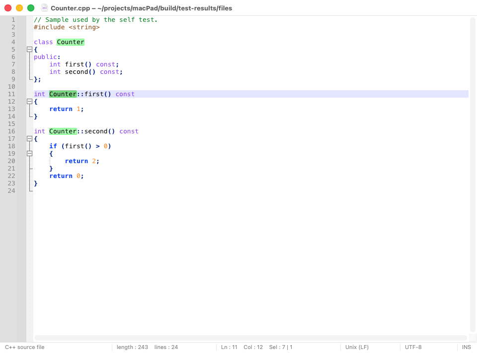
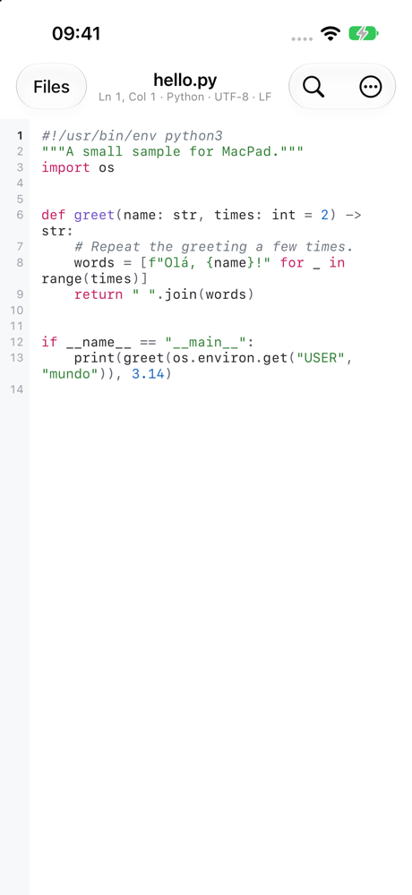
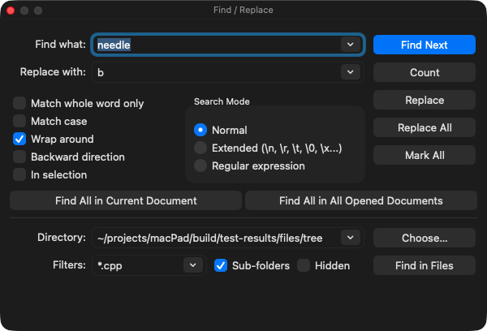

A fast, native editor for text and code. Um editor de texto e código nativo e rápido.
For Mac, iPhone and iPad. About 100 languages highlighted, the same themes on every device, and your documents in iCloud Drive. Free and open source. Para Mac, iPhone e iPad. Realce para cerca de 100 linguagens, os mesmos temas em todos os aparelhos e seus documentos no iCloud Drive. Livre e de código aberto.
macOS 11 or later · iPhone and iPad with iOS 16 or later · GPL v3 macOS 11 ou posterior · iPhone e iPad com iOS 16 ou posterior · GPL v3


On every deviceEm todos os aparelhos
One editor, the same on the Mac and in your pocket.Um editor, igual no Mac e no bolso.
Both apps colour text with the same engine and themes, so a file looks the same wherever you open it. Os dois apps colorem o texto com o mesmo motor e os mesmos temas, então um arquivo fica igual onde quer que você o abra.
About 100 languagesCerca de 100 linguagens
Picked from the extension, the file name (Makefile, .zshrc) or the first line (#!/usr/bin/env python3).Escolhida pela extensão, pelo nome do arquivo (Makefile, .zshrc) ou pela primeira linha (#!/usr/bin/env python3).
10 themes10 temas
Light, Dark, Paper, Ocean, Midnight, two with high contrast and more, or Automatic, which follows the system's appearance.Light, Dark, Paper, Ocean, Midnight, dois de alto contraste e outros, ou Automatic, que segue a aparência do sistema.
Every common encodingTodas as codificações comuns
UTF-8, UTF-16 and older code pages are detected by themselves, and CR LF, LF and CR line endings are kept. A character an encoding cannot store is never dropped silently.UTF-8, UTF-16 e páginas de código antigas são detectadas sozinhas, e os finais de linha CR LF, LF e CR são mantidos. Um caractere que a codificação não comporta nunca some calado.
Tools for lines and textFerramentas de linhas e texto
Sort, reverse, remove duplicates and empty lines, trim spaces, toggle comments; change case, MD5 and SHA, Base64, URL encoding, format and minify JSON.Ordenar, inverter, remover duplicadas e vazias, aparar espaços, comentar; maiúsculas e minúsculas, MD5 e SHA, Base64, URL, formatar e minificar JSON.
Help while typingAjuda ao digitar
Auto-indentation, and brackets and quotes that close themselves in source code.Autoindentação, e parênteses e aspas que fecham sozinhos em código-fonte.
Yours aloneSó seu
No account, no tracking, no ads. MacPad sends nothing anywhere: your files stay where you keep them.Sem conta, sem rastreamento, sem anúncios. O MacPad não envia nada a lugar nenhum: seus arquivos ficam onde você os guarda.
On the MacNo Mac
Made for the Mac, and it never loses your work.Feito para o Mac, e nunca perde seu trabalho.
- Native window tabs, menus, dark mode and the usual macOS shortcuts.Abas nativas, menus, modo escuro e os atalhos de sempre do macOS.
- Quitting never asks to save: every document, unsaved text included, is back at the next launch.Sair nunca pergunta se quer salvar: todo documento, até o texto não salvo, volta na próxima abertura.
- Find and Replace with regular expressions, Find All, and Find in Files across a folder.Buscar e substituir com expressões regulares, Find All e busca em todos os arquivos de uma pasta.
- Multiple and column selections, auto-completion, and macros you record and play back.Seleção múltipla e em coluna, autocompletar e macros que você grava e repete.
- Code folding, bookmarks, change history in the margin and brace matching.Dobra de código, marcadores, histórico de alterações na margem e realce de pares.

On iPhone and iPadNo iPhone e no iPad
Real code editing, with a keyboard made for it.Edição de código de verdade, com um teclado feito para isso.
- Opens, creates and renames files in Files: iCloud Drive, On My iPhone or any other provider.Abre, cria e renomeia arquivos no app Arquivos: iCloud Drive, No Meu iPhone ou qualquer outro provedor.
- A row of coding keys above the keyboard: Tab, arrows, brackets, quotes, undo and redo.Uma fileira de teclas de programação acima do teclado: Tab, setas, chaves, aspas, desfazer e refazer.
- Line numbers, and a status line with line, column, language, encoding and line ending.Números de linha e uma linha de status com linha, coluna, linguagem, codificação e final de linha.
- Saves by itself; the last document is open again when you come back.Salva sozinho; o último documento está aberto quando você volta.
- The system's Find and Replace, Go to Line, and with a hardware keyboard the shortcuts you know.Buscar e substituir do sistema, Ir para a linha e, com teclado físico, os atalhos que você já conhece.
iCloud Drive
The same documents on the Mac and the iPhone.Os mesmos documentos no Mac e no iPhone.
Through iCloud Drive, with nothing to set up and no account but your Apple ID. Pelo iCloud Drive, sem nada para configurar e sem outra conta além do seu Apple ID.
Write on the MacEscreva no Mac
A new document becomes a file in iCloud Drive › MacPad a couple of seconds after you stop typing. Documents there save themselves.Um documento novo vira um arquivo em iCloud Drive › MacPad uns dois segundos depois que você para de digitar. Os documentos de lá se salvam sozinhos.
Open it on the iPhoneAbra no iPhone
In MacPad, choose Browse › iCloud Drive › MacPad. A change shows on the other device as soon as iCloud has synced it.No MacPad, escolha Browse › iCloud Drive › MacPad. Uma alteração aparece no outro aparelho assim que o iCloud a sincroniza.
Nothing lostNada se perde
Changed on both devices before iCloud synced? Both versions are kept: one stays open, the other is saved beside it as name (device).ext.Alterou nos dois aparelhos antes de o iCloud sincronizar? As duas versões ficam: uma continua aberta e a outra é salva ao lado como nome (aparelho).ext.
iCloud Drive needs to be on, on both devices. Settings such as the theme and the font are kept per device. O iCloud Drive precisa estar ligado nos dois aparelhos. Ajustes como tema e fonte ficam em cada aparelho.
KeyboardTeclado
Shortcuts on the MacAtalhos no Mac
InstallInstalar
Get MacPadTenha o MacPad
Mac
- Download MacPad from Releases and drag it to Applications.Baixe o MacPad em Releases e arraste-o para Aplicativos.
- The first time, macOS says it cannot check MacPad, which is not notarized by Apple. Open System Settings › Privacy & Security and click Open Anyway. Only once.Na primeira vez, o macOS diz que não consegue verificar o MacPad, que não é notarizado pela Apple. Abra Ajustes do Sistema › Privacidade e Segurança e clique em Abrir Mesmo Assim. Só uma vez.
Or build it yourself with the Xcode command line tools:Ou compile você mesmo com as ferramentas de linha de comando do Xcode:
xcode-select --install
git clone https://github.com/JeffJna/MacPad.git
cd MacPad && make installiPhone & iPad
MacPad is not on the App Store: you build it on a Mac with Xcode, and a free Apple ID is enough.O MacPad não está na App Store: você o compila num Mac com o Xcode, e um Apple ID gratuito basta.
- Open
ios/MacPad.xcodeprojin Xcode.Abraios/MacPad.xcodeprojno Xcode. - In Signing & Capabilities, choose your team (Your Name (Personal Team)).Em Signing & Capabilities, escolha seu time (Seu Nome (Personal Team)).
- Connect the iPhone, choose it at the top of the window and press Run (⌘R).Conecte o iPhone, escolha-o no topo da janela e clique em Run (⌘R).
- On the iPhone, turn on Developer Mode and trust your certificate when it asks.No iPhone, ative o Modo de Desenvolvedor e confie no seu certificado quando ele pedir.
With a free Apple ID the app runs for 7 days; press Run again to renew it.Com Apple ID gratuito o app funciona por 7 dias; clique em Run de novo para renovar.